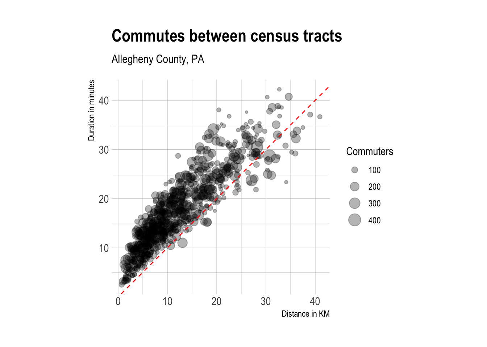
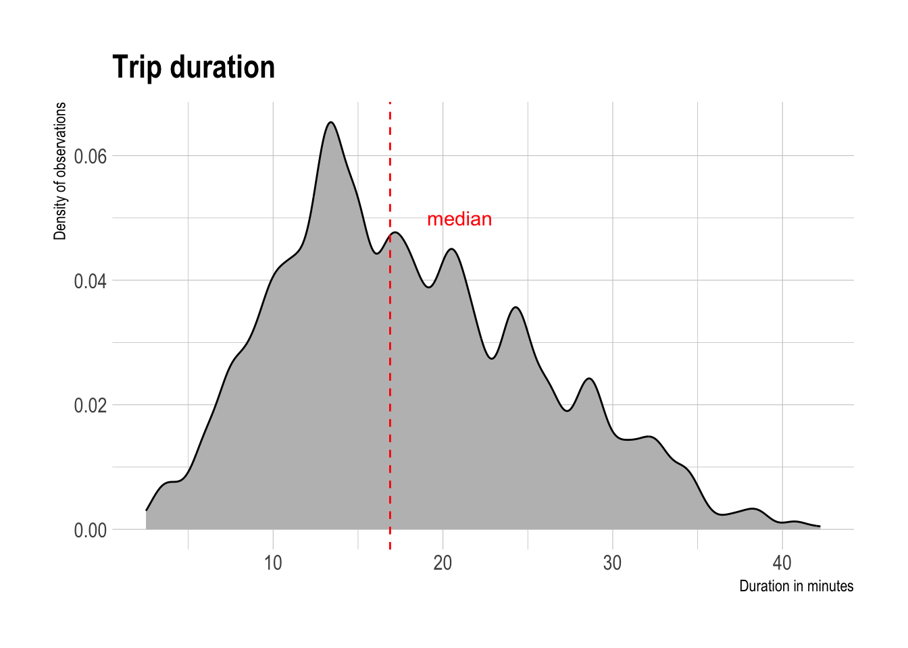
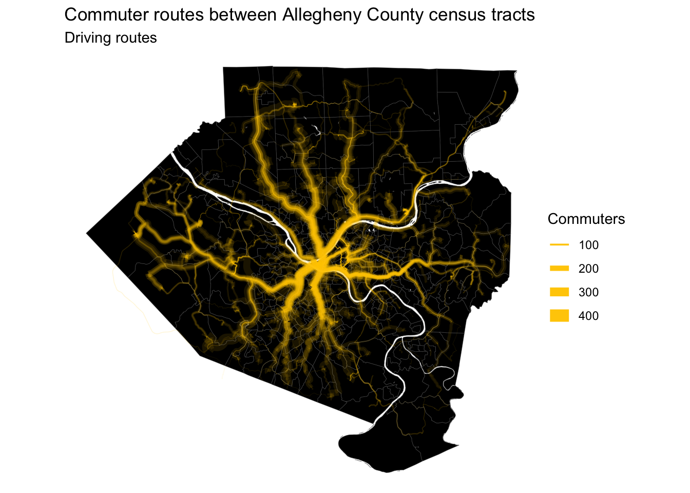
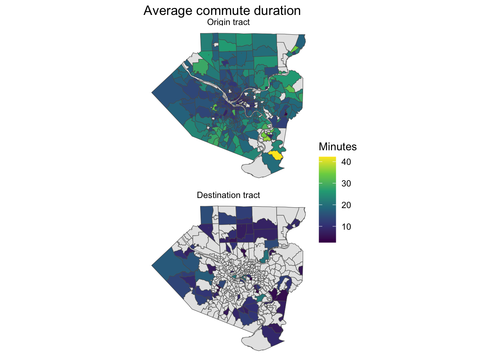
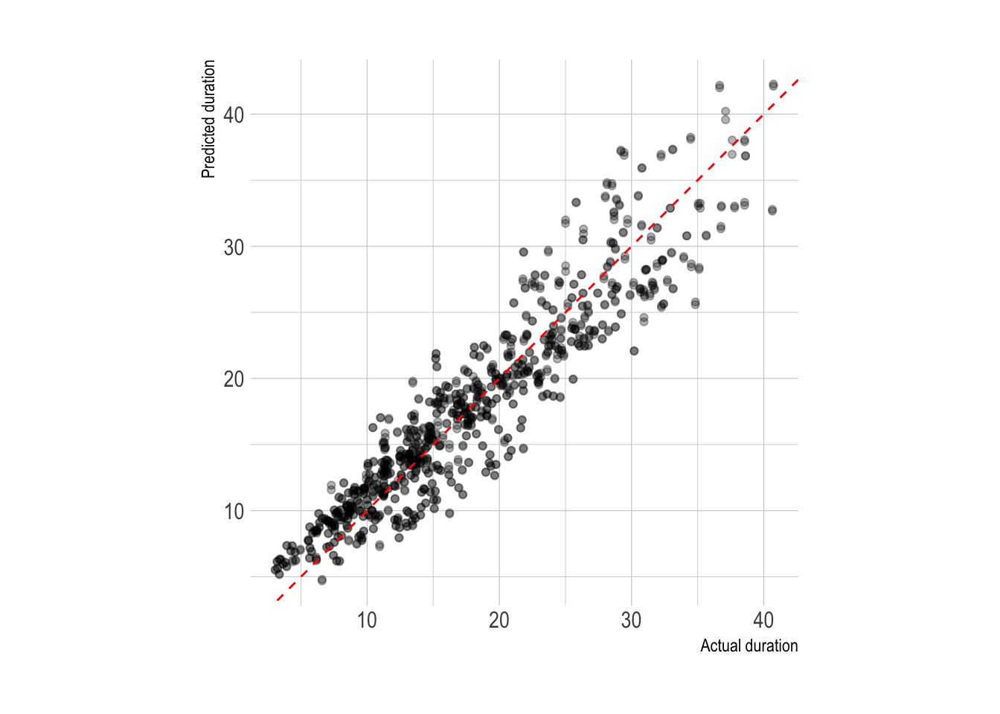
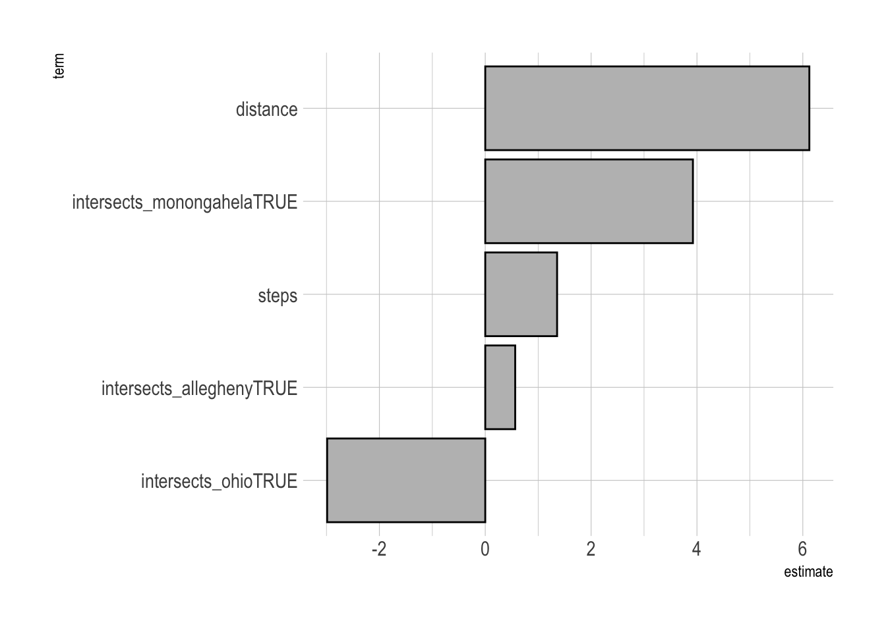
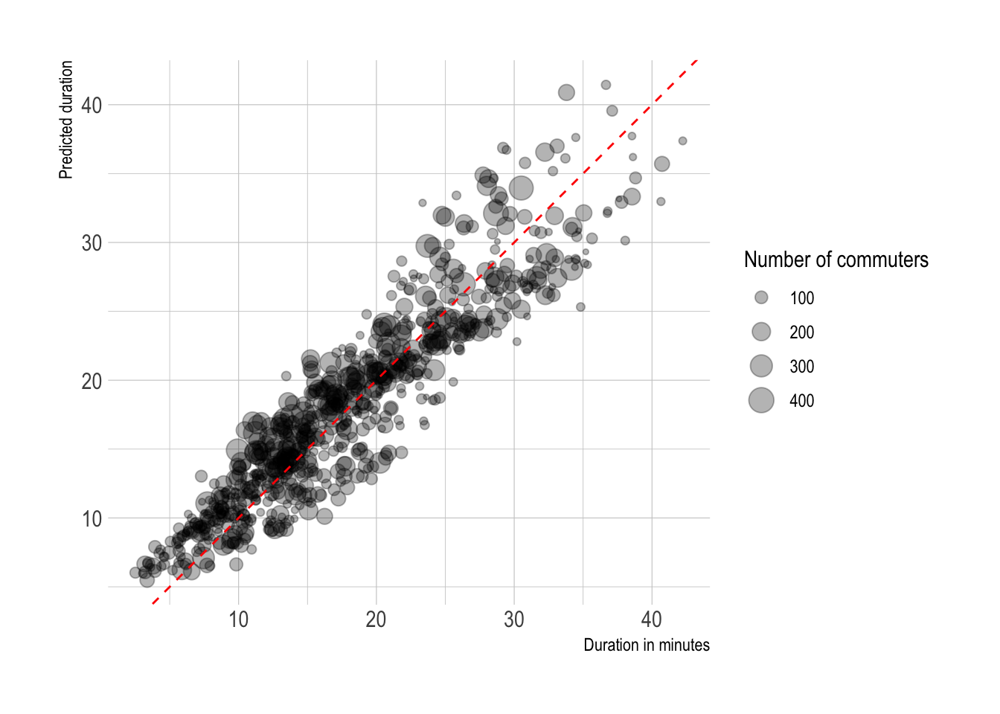
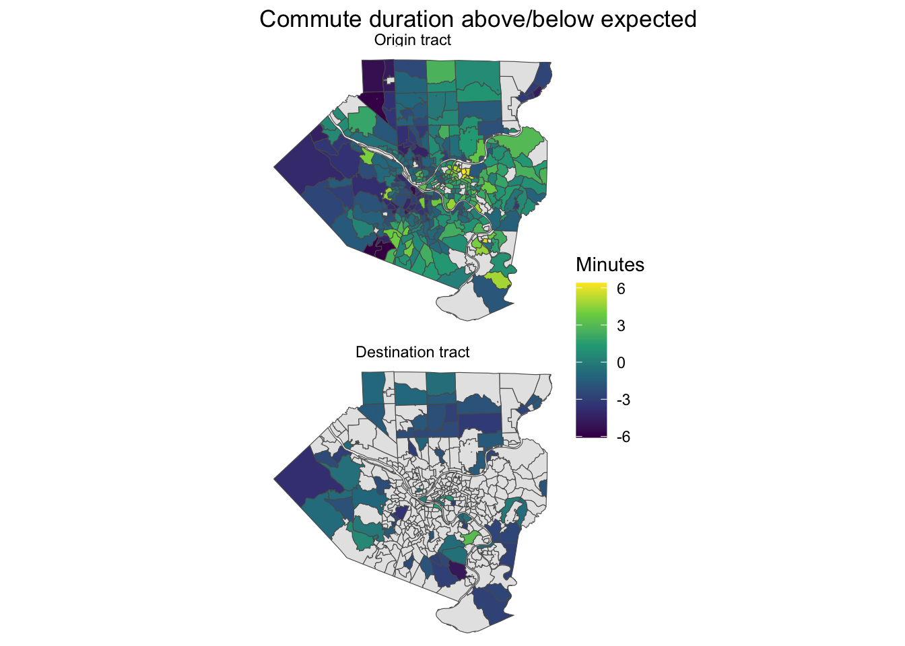

library(tidyverse)
library(tidymodels)
library(mapboxapi)
library(tidycensus)
library(janitor)
library(lehdr)
library(tigris)
library(sf)
library(hrbrthemes)
options(tigris_use_cache = TRUE,
scipen = 999,
digits = 4)
theme_set(theme_ipsum())
sf_use_s2(FALSE)Intro
In this post I will use the Mapbox API to calculate metrics for major commuter routes in Allegheny County. The API will provide the distance and duration of the trip, as well as turn-by-turn directions. The route duration should be considered a “minimum duration” because it does not consider traffic. Then I will estimate the duration of the trips with a linear model and compare that to the actual duration from the Mapbox API. I will use the difference between the actual and estimated duration to identify neighborhoods that experience longer or shorter commutes than expected.
Gather data
The first step is to download the census tract shapefiles for the county:
#get tracts
allegheny_county_tracts <- tracts(state = "PA", county = "Allegheny", cb = TRUE) %>%
select(GEOID)
st_erase <- function(x, y) {
st_difference(x, st_union(y))
}
ac_water <- area_water("PA", "Allegheny", class = "sf")
allegheny_county_tracts <- st_erase(allegheny_county_tracts, ac_water)Then I download the “Origin-Destination” LODES file from the Census for Pennsylvania in 2017 and subset it to commuters within Allegheny County.
#load od tract-level data
lodes_od_ac_main <- grab_lodes(state = "pa", year = 2017,
lodes_type = "od", job_type = "JT00",
segment = "S000", state_part = "main",
agg_geo = "tract", use_cache = TRUE) %>%
select(state, w_tract, h_tract, S000, year) %>%
rename(commuters = S000) %>%
mutate(intra_tract_commute = h_tract == w_tract) %>%
semi_join(allegheny_county_tracts, by = c("w_tract" = "GEOID")) %>%
semi_join(allegheny_county_tracts, by = c("h_tract" = "GEOID"))This analysis only considers routes where the commuter changed census tracts. 96% of commuters in Allegheny County change census tracts.
lodes_od_ac_main %>%
group_by(intra_tract_commute) %>%
summarize(commuters = sum(commuters)) %>%
ungroup() %>%
mutate(pct = commuters / sum(commuters))# A tibble: 2 × 3
intra_tract_commute commuters pct
<lgl> <dbl> <dbl>
1 FALSE 465637 0.963
2 TRUE 18127 0.0375Get directions
This is the code that identifies the center of each tract, geocodes those centroids to get an address, and gets the turn-by-turn directions and route data for each pair of home and work addresses. I will focus on the top 20% of these routes (in terms of cumulative percent of commuters) because the Mapbox API is not designed for the size of query I would need to get directions for all combinations of census tracts.
Note that I manually replaced the geocoded address for the Wexford and Swissvale areas because the geocoder returned results outside of the county, probably because the center of those tracts intersect with highways.
#filter out rows where commuter doesn't change tracts
combined_tract_sf <- lodes_od_ac_main %>%
arrange(desc(commuters)) %>%
filter(w_tract != h_tract)
#calculate cumulative pct of commuters, keep only top 20%
combined_tract_sf_small <- combined_tract_sf %>%
select(h_tract, w_tract, commuters) %>%
arrange(desc(commuters)) %>%
mutate(id = row_number(),
pct_commuters = commuters / sum(commuters),
cumulative_pct_commuters = cumsum(pct_commuters)) %>%
filter(cumulative_pct_commuters < .2) %>%
select(h_tract, w_tract, commuters)
#add census centroid geometry
combined_tract_sf_small <- combined_tract_sf_small %>%
left_join(st_centroid(allegheny_county_tracts), by = c("h_tract" = "GEOID")) %>%
rename(h_tract_geo = geometry) %>%
left_join(st_centroid(allegheny_county_tracts), by = c("w_tract" = "GEOID")) %>%
rename(w_tract_geo = geometry) %>%
select(h_tract, h_tract_geo, w_tract, w_tract_geo, commuters)
combined_tract_sf_small |>
st_sf() |>
ggplot() +
geom_sf(data = allegheny_county_tracts) +
geom_sf()
#get addresses for tract centroids
tract_od_directions <- combined_tract_sf_small %>%
mutate(home_address = map_chr(h_tract_geo, mb_reverse_geocode),
work_address = map_chr(w_tract_geo, mb_reverse_geocode))
#replace bad address with good address
wexford_good_address <- "3321 Wexford Rd, Gibsonia, PA 15044"
swissvale_good_address <- "1118 S Braddock Ave, Swissvale, PA 15218"
tract_od_directions <- tract_od_directions %>%
#fix wexford address
mutate(home_address = case_when(h_tract == "42003409000" ~ wexford_good_address,
h_tract != "42003409000" ~ home_address),
work_address = case_when(w_tract == "42003409000" ~ wexford_good_address,
w_tract != "42003409000" ~ work_address)) |>
#fix swissvale address
mutate(home_address = case_when(h_tract == "42003515401" ~ swissvale_good_address,
TRUE ~ home_address))
#define error-safe mb_directions function
mb_directions_possibly <- possibly(mb_directions, otherwise = NA)
#geocode addresses, get directions
tract_od_directions <- tract_od_directions %>%
mutate(home_address_location_geocoded = map(home_address, mb_geocode),
work_address_location_geocoded = map(work_address, mb_geocode)) %>%
mutate(directions = map2(home_address, work_address, ~ mb_directions_possibly(origin = .x,
destination = .y,
steps = TRUE,
profile = "driving"))) %>%
select(h_tract, h_tract_geo, home_address, home_address_location_geocoded,
w_tract, w_tract_geo, work_address, work_address_location_geocoded,
directions, commuters)The core of the above code is combining map2 and mb_directions_possibly. This maps the mb_directions_possibly function against two inputs (the home address and work address).
The result is a dataframe with a row per turn-by-turn direction for each commuter route.
This summarizes the data so there is one row per commuter route and creates summarized route data.
#summarize direction data
tract_od_stats <- tract_od_directions %>%
group_by(h_tract, home_address, w_tract, work_address) %>%
summarize(duration = sum(duration),
distance = sum(distance),
steps = n(),
commuters = unique(commuters)) %>%
ungroup()As expected, route duration and distance are highly correlated. The median duration of a trip is 16.7 minutes.
#graph od stats
tract_od_stats %>%
ggplot(aes(distance, duration, size = commuters)) +
geom_point(alpha = .3) +
geom_abline(linetype = 2, color = "red") +
coord_equal() +
theme_ipsum() +
labs(title = "Commutes between census tracts",
subtitle = "Allegheny County, PA",
x = "Distance in KM",
y = "Duration in minutes",
size = "Commuters")
median_duration <- tract_od_stats %>%
uncount(weights = commuters) %>%
summarize(median_duration = median(duration)) %>%
pull(median_duration)
tract_od_stats %>%
uncount(weights = commuters) %>%
ggplot(aes(duration)) +
geom_density(fill = "grey") +
geom_vline(xintercept = median_duration, lty = 2, color = "red") +
annotate("text", x = 21, y = .05, label = "median", color = "red") +
theme_ipsum() +
labs(title = "Trip duration",
x = "Duration in minutes",
y = "Density of observations")
This map shows the main roads that commuter routes use I-376, I-279, and Route 28 are major arteries, as expected.
#map routes
tract_od_stats %>%
ggplot() +
geom_sf(data = allegheny_county_tracts, linewidth = .1, fill = "black") +
geom_sf(aes(alpha = commuters, linewidth = commuters), color = "#ffcc01", alpha = .1) +
guides(linewidth = guide_legend(override.aes= list(alpha = 1))) +
scale_linewidth_continuous(range = c(.1, 5)) +
theme_void() +
labs(title = "Commuter routes between Allegheny County census tracts",
subtitle = "Driving routes",
linewidth = "Commuters")
A high-resolution image of this map is available here. An animation of the routes is here.
{kind=link}
{kind=link}
People that live closer to downtown Pittsburgh have shorter commutes, on average.
allegheny_county_tracts %>%
st_drop_geometry() %>%
left_join(tract_od_stats %>%
st_drop_geometry() |>
select(h_tract, w_tract, duration) %>%
pivot_longer(contains("tract")) %>%
group_by(name, value) %>%
summarize(avg_duration = mean(duration)) %>%
ungroup(),
by = c("GEOID" = "value")) %>%
complete(GEOID, name) %>%
filter(!is.na(name)) %>%
left_join(allegheny_county_tracts, by = "GEOID") %>%
mutate(name = case_when(name == "h_tract" ~ "Origin tract",
name == "w_tract" ~ "Destination tract"),
name = as.factor(name) %>% fct_rev()) %>%
st_sf() %>%
ggplot() +
geom_sf(aes(fill = avg_duration), size = .1) +
facet_wrap(~name, ncol = 1) +
scale_fill_viridis_c(na.value = "grey90") +
labs(title = "Average commute duration",
fill = "Minutes") +
theme_void()
Model
The next step is to create a model that estimates the duration of a given commute. I will use the number of steps in the turn-by-turn directions and the distance as predictors. Additionally, I will calculate which rivers a commute route crosses and use those as logical variables in the model.
This collects the geometry for the main rivers in the county.
main_rivers <- ac_water %>%
group_by(FULLNAME) %>%
summarize(AWATER = sum(AWATER)) %>%
arrange(desc(AWATER)) %>%
slice(1:4)This code calculates whether a given commuter route crosses a river.
tract_od_stats_rivers <- tract_od_stats %>%
mutate(intersects_ohio = st_intersects(., main_rivers %>%
filter(FULLNAME == "Ohio Riv")) %>% as.logical(),
intersects_allegheny = st_intersects(., main_rivers %>%
filter(FULLNAME == "Allegheny Riv")) %>% as.logical(),
intersects_monongahela = st_intersects(., main_rivers %>%
filter(FULLNAME == "Monongahela Riv")) %>% as.logical(),
intersects_youghiogheny = st_intersects(., main_rivers %>%
filter(FULLNAME == "Youghiogheny Riv")) %>% as.logical()) %>%
replace_na(list(intersects_ohio = FALSE,
intersects_allegheny = FALSE,
intersects_monongahela = FALSE,
intersects_youghiogheny = FALSE)) %>%
st_drop_geometry()
glimpse(tract_od_stats_rivers)Rows: 780
Columns: 12
$ h_tract <chr> "42003020100", "42003020300", "42003030500", "…
$ home_address <chr> "445 Wood Street, Pittsburgh, Pennsylvania 152…
$ w_tract <chr> "42003982200", "42003020100", "42003020100", "…
$ work_address <chr> "4215 Fifth Avenue, Pittsburgh, Pennsylvania 1…
$ duration <dbl> 14.087, 9.225, 7.460, 10.951, 2.510, 10.517, 1…
$ distance <dbl> 5.6640, 2.6518, 1.5922, 3.4968, 0.7169, 4.2762…
$ steps <int> 8, 7, 7, 5, 6, 6, 9, 7, 10, 11, 14, 10, 10, 8,…
$ commuters <dbl> 58, 106, 287, 68, 81, 129, 87, 121, 116, 59, 1…
$ intersects_ohio <lgl> FALSE, FALSE, FALSE, FALSE, FALSE, FALSE, FALS…
$ intersects_allegheny <lgl> FALSE, FALSE, FALSE, FALSE, FALSE, FALSE, FALS…
$ intersects_monongahela <lgl> FALSE, FALSE, FALSE, FALSE, FALSE, FALSE, FALS…
$ intersects_youghiogheny <lgl> FALSE, FALSE, FALSE, FALSE, FALSE, FALSE, FALS…tract_od_stats_rivers <- tract_od_stats_rivers %>%
mutate(od_id = str_c("h_tract: ", h_tract, ", ", "w_tract: ", w_tract, sep = ""))First I set the seed and split the data into training and testing sets.
set.seed(1234)
#split data
splits <- initial_split(tract_od_stats_rivers, prop = .75)
training_data <- training(splits)
testing_data <- testing(splits)Then I use {tidymodels} to define a linear model, cross-validate it, and extract the coefficients.
#recipe
model_recipe <- recipe(duration ~ .,
data = training_data) %>%
update_role(od_id, new_role = "id") %>%
step_rm(h_tract, home_address, w_tract, work_address, commuters) %>%
step_normalize(distance, steps) %>%
step_zv(all_predictors())
model_recipe %>%
prep() %>%
summary()# A tibble: 8 × 4
variable type role source
<chr> <list> <chr> <chr>
1 distance <chr [2]> predictor original
2 steps <chr [2]> predictor original
3 intersects_ohio <chr [1]> predictor original
4 intersects_allegheny <chr [1]> predictor original
5 intersects_monongahela <chr [1]> predictor original
6 intersects_youghiogheny <chr [1]> predictor original
7 od_id <chr [3]> id original
8 duration <chr [2]> outcome originalmodel_recipe_prep <- model_recipe %>%
prep()#apply cv to training data
training_vfold <- vfold_cv(training_data, v = 10, repeats = 2)#model specification
lm_model <- linear_reg(mode = "regression") %>%
set_engine("lm")
#linear regression workflow
lm_workflow <- workflow() %>%
add_recipe(model_recipe) %>%
add_model(lm_model)
#fit against training resamples
keep_pred <- control_resamples(save_pred = TRUE)
lm_training_fit <- lm_workflow %>%
fit_resamples(training_vfold, control = keep_pred) %>%
mutate(model = "lm")
#get results from training cv
lm_training_fit %>%
collect_metrics()# A tibble: 2 × 6
.metric .estimator mean n std_err .config
<chr> <chr> <dbl> <int> <dbl> <chr>
1 rmse standard 2.88 20 0.0590 Preprocessor1_Model1
2 rsq standard 0.870 20 0.00571 Preprocessor1_Model1The model averaged an R-squared of .82 on the training data, which is pretty good.
The predictions from the training set fit the actual duration pretty well.
#graph predictions from assessment sets
lm_training_fit %>%
collect_predictions() %>%
ggplot(aes(duration, .pred)) +
geom_point(alpha = .3) +
geom_abline(linetype = 2, color = "red") +
coord_equal() +
labs(x = "Actual duration",
y = "Predicted duration")
Next I fit the model against the test data to extract the coefficients. Holding the other variables constant, distance is by far the most influential variable in the model. For every kilometer increase in distance, the duration of the commute can be expected to increase by around 5 minutes. Crossing the Monongahela will add around 2 minutes to a commute, while crossing the Allegheny and Ohio actually decrease commute times. This is probably related to the bridge that the commuter uses.
#variable importance
lm_workflow %>%
fit(testing_data) %>%
pull_workflow_fit() %>%
tidy() %>%
filter(term != "(Intercept)") %>%
mutate(term = fct_reorder(term, estimate)) %>%
ggplot(aes(estimate, term)) +
geom_col(fill = "grey", color = "black")
This fits the model to the full dataset and plots the predicted duration against the actual duration. The fit is tighter than just plotting distance vs. duration.
#final model
tract_od_pred <- lm_workflow %>%
fit(testing_data) %>%
predict(tract_od_stats_rivers) %>%
bind_cols(tract_od_stats_rivers) %>%
select(h_tract, w_tract, distance, steps, duration, .pred, commuters)
tract_od_pred %>%
ggplot(aes(duration, .pred, size = commuters)) +
geom_point(alpha = .3) +
geom_abline(lty = 2, color = "red") +
coord_equal() +
labs(x = "Duration in minutes",
y = "Predicted duration",
size = "Number of commuters")
This calculates how far off the model’s estimation of duration was for each census tract in the dataset (origin and destination). Commuters originating from neighborhoods between State Route 51 and the Monongahela River experience longer than expected commutes.
allegheny_county_tracts %>%
st_drop_geometry() %>%
left_join(tract_od_pred %>%
mutate(.resid = duration - .pred) %>%
select(h_tract, w_tract, .resid) %>%
pivot_longer(contains("tract")) %>%
group_by(name, value) %>%
summarize(avg_resid = mean(.resid)) %>%
ungroup(),
by = c("GEOID" = "value")) %>%
complete(GEOID, name) %>%
filter(!is.na(name)) %>%
left_join(allegheny_county_tracts) %>%
mutate(name = case_when(name == "h_tract" ~ "Origin tract",
name == "w_tract" ~ "Destination tract"),
name = as.factor(name) %>% fct_rev()) %>%
st_sf() %>%
ggplot() +
geom_sf(aes(fill = avg_resid), size = .1) +
facet_wrap(~name, ncol = 1) +
scale_fill_viridis_c(na.value = "grey90") +
labs(title = "Commute duration above/below expected",
fill = "Minutes") +
theme_void()